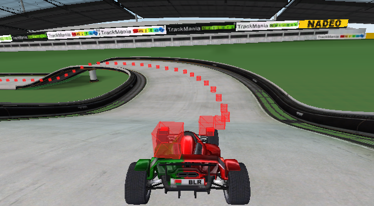

Measure of Progress
Similar to other projects, we also use a reference-line along the track in order to measure the progress of the agent (car) algon the track. The main reason for this is because there is no built-in measure. The reference line is defined in world-coordinates (or track-coordinates).
ReferenceLineManager
The trackmania_env.utils.reference_line_manager.ReferenceLineManager is one of the most important managers of the environment, as it keeps track of the progress of the car. Once per environment-step, the refline-manager is given the current position of the car and then calculates the next-reference-line points and the distance to the next-reference-line point. This is done by the environment automatically. Afterwards, other components can interact with the reference-line-manager using these methods:
Methods
get_distance_to_next_point()- returns index to next point, absolute distance to next point, and relative distance that has been coveredcalculate_lateral_difference(idx, carpos)- takes the index of the next reference line point and the position of the agent (car) in world-coordinates. It calculates the absolute distance of the car to the reference line (orthogonally projects the car-position onto the reference line and returns the magnitude of the support vector). Assumes the reference line to be in the center of the track.get_discrete_distance(i)- Say d(i) is the accumulated distance for all line-segments until reference line point with index i, then this method returns; d(i) - d(i-1), only the distance between i and i-1.
Example Usage
# i is the index of the next point
i, d, drel = self.env.reference_line.get_distance_to_next_point()
Visualize it
Its important to validate the reference line before training; best and basically only way is to visualize it.
In-Game
Start the game using the modloader TMLoader. Then execute
python tracks\reference_line\create_refline\add_vcp_as_triggers.py tracks/reference_line/Level1.npy
which should then look something like this

Matplotlib
Use tracks.reference_line.plot.py, which is a quick-and-dirty script to quickly visualize the reference line as a 3D Plot in matplotlib. The script assumes the reference line is stored in tracks/reference_line as a numpy-file. When in base-directory of the repository execute:
python .\tracks\reference_line\plot.py Level1.npy #or any other Refline
Create your own
When introducing a new map to the learning setup or just wanting a reference line that is not in the center, its necessary to create your own. Follow these steps:
- Start TMNF using TMloader and load the map for which you want to create a reference line
- Drive the reference line you desire (it does not matter how fast you drive, you can take your time)
- Save the replay
- Execute
python tracks/reference_line/create_refline/gbx_to_vcp.py [path_to_your_replay] [path_to_npy-file] - The
.npyfile is your reference-line - Make sure to inspect it in order to check if everything is as you please!
Saving Convention
In this repository, we always name the reference-line-file EXACTLY as the track-file. So if your track is called abc.Challenge.Gbx your refernce-line should be called abc.npy. This is important, as the Reference-Line-Manager loads the reference-line dynamically and is only given the track name.
Also save your reference line in the reference_line directory, as it is expected here.